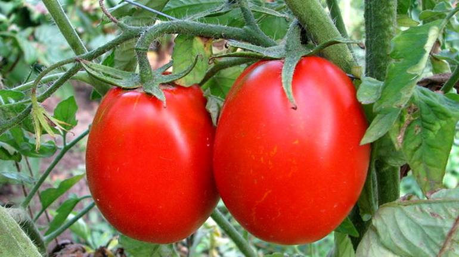

Среднеранний гибрид для открытого грунта и пленочных укрытий. Период от всходов до начала созревания 105-110 дней. Растение среднеоблиственное, детерминантного типа роста, высотой 90-120см. Первая кисть закладывается над 5-6 листом, последующая через 1-2 листа. Кисть простая с 56 плодами массой 200-250г. Окраска зрелого плода интенсивно малиновая. Плоды округлые, плотные с высокими вкусовыми качествами и транспортабельностью. Выход стандартных плодов 98%, урожайность за первых два сбора 6,6кг/м2, общая урожайность – 18кг/м2. Гибрид устойчив к альтернариозу и ВТМ. Достоинства: хорошие вкусовые качества, высокая транспортабельность. Посев: на рассаду – конец марта начало апреля, предварительно замоченными на 12-20 часов во влажной хлопчатобумажной ткани семенами, на глубину не более 1см. Посевы слегка уплотняют и накрывают пленкой или стеклом. Пленку удаляют, когда половина семян даст всходы. Первый полив через 3 дня после снятия пленки раствором кальциевой селитры 2,5г/л. Пикировка в фазе 1-2 настоящих листьев. Полив умеренный, подкормки рассады раз в 7-10 дней раствором минеральных удобрений с содержанием K:N в соотношении 2:1. За 3 дня до высадки рассады, чтобы минимизировать стресс от пересадки, рекомендуется опрыскивание раствором эпина. 55-65дневную, предварительно закаленную рассаду, высаживают на постоянное место, с добавлением в лунку 10г суперфосфата. Схема посадки 60х4045см. Уход: регулярный полив теплой водой, подкармливать в течение вегетации 2-3 раза комплексным удобрением (NPK), рыхление, прополка от сорняков, организация опоры.
